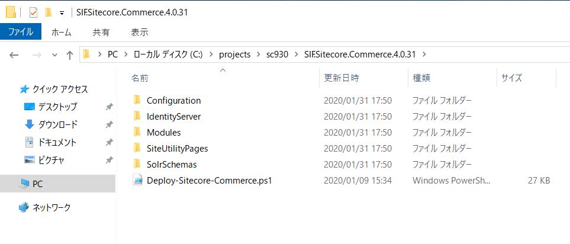
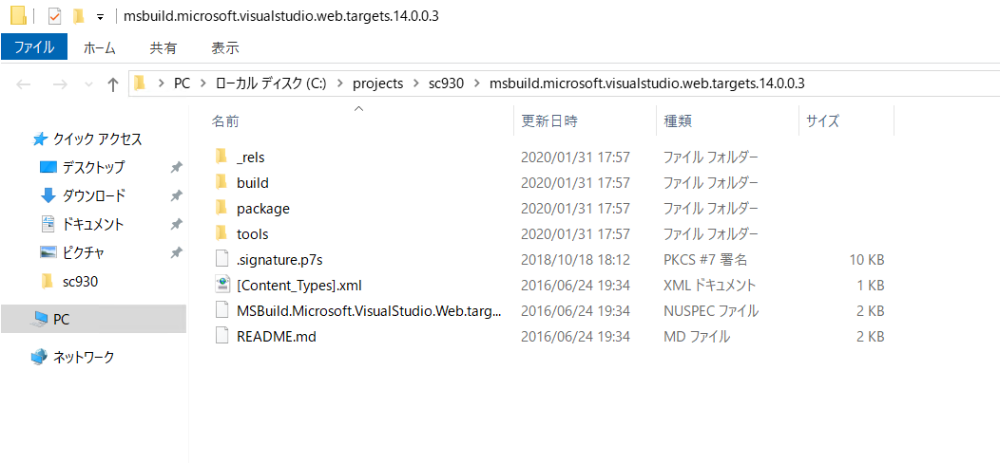

3.4. Commerce モジュールのインストール¶
{kind=link}
3.4.2. インストールの準備¶
モジュールを Sitecore のダウンロードサイトからダウンロードします。
ダウンロードしたファイルを、今回は c:\projects\sc930 に展開をします。

SIF.Sitecore.Commerce.zip のファイルを展開します。
{kind=link}
SXA のコンポーネント Sitecore.PowerShell.Extensions-6.0.zip と Sitecore.PowerShell.Extensions-6.0.zip を同じフォルダにコピーします。
Nuget サイトから MSBuild Microsoft Visual Studio Web targets のページ、右側から Download package から zip ファイルをダウンロードします。
ダウンロード後、ファイル名を msbuild.microsoft.visualstudio.web.targets.14.0.0.3.nupkg から msbuild.microsoft.visualstudio.web.targets.14.0.0.3.zip に変更し、解凍します。
{kind=link}
展開されたフォルダは以下のようになります。
PS C:projectssc930> dir
ディレクトリ: C:projectssc930
Mode LastWriteTime Length Name
---- ------------- ------ ----
d----- 2020/04/27 12:26 msbuild.microsoft.visualstudio.web.targets.14.0.0.3
d----- 2020/04/27 11:29 SIF.Sitecore.Commerce.4.0.31
------ 2019/03/29 15:35 278539353 Adventure Works Images.OnPrem.scwdp.zip
------ 2020/01/09 20:34 223921 SIF.Sitecore.Commerce.4.0.31.zip
------ 2020/01/13 8:47 536719 Sitecore Commerce Connect Core OnPrem 14.0.27.scwdp.zip
------ 2020/01/14 9:30 2448821 Sitecore Commerce Engine Connect OnPrem 5.0.55.scwdp.zip
------ 2020/01/14 9:30 2319035 Sitecore Commerce Experience Accelerator 4.0.120.scwdp.zip
------ 2020/01/14 9:30 7195 Sitecore Commerce Experience Accelerator Habitat Catalog 4.0.120.scwdp.zip
------ 2020/01/14 9:30 5549158 Sitecore Commerce Experience Accelerator Storefront 4.0.120.scwdp.zip
------ 2020/01/14 9:30 1391035 Sitecore Commerce Experience Accelerator Storefront Themes 4.0.120.scwdp.zip
------ 2020/01/13 8:47 317218 Sitecore Commerce ExperienceAnalytics Core OnPrem 14.0.27.scwdp.zip
------ 2020/01/13 8:47 124628 Sitecore Commerce ExperienceProfile Core OnPrem 14.0.27.scwdp.zip
------ 2020/01/13 8:47 99096 Sitecore Commerce Marketing Automation Core OnPrem 14.0.27.scwdp.zip
------ 2020/01/13 8:46 102252 Sitecore Commerce Marketing Automation for AutomationEngine 14.0.27.zip
-a---- 2019/11/29 10:03 33472713 Sitecore Experience Accelerator 9.3.0.2589.zip
------ 2020/01/13 10:56 3645436 Sitecore.BizFx.OnPrem.4.0.8.scwdp.zip
------ 2020/01/13 10:53 70465 Sitecore.BizFX.SDK.4.0.8.zip
------ 2020/01/14 9:33 28870866 Sitecore.Commerce.Engine.OnPrem.Solr.5.0.145.scwdp.zip
------ 2020/01/13 10:20 28524059 Sitecore.Commerce.Engine.SDK.5.0.76.zip
------ 2019/03/29 15:37 295313591 Sitecore.Commerce.Habitat.Images.OnPrem.scwdp.zip
-a---- 2019/11/29 10:01 5482094 Sitecore.PowerShell.Extensions-6.0.zip
------ 2020/01/14 9:31 3993490 speak-icon-fonts-1.1.0.tgz
------ 2020/01/14 9:31 103085 speak-ng-bcl-2.0.0-r00116.tgz
------ 2020/01/14 9:31 549593 speak-styling-1.0.0-r00110.tgz
PS C:\projects\sc930>
3.4.3. インストールスクリプトの調整¶
すでに展開されている C:\projects\sc930\SIF.Sitecore.Commerce.4.0.31 に入っている Deploy-Sitecore-Commerce.ps1 のファイルを開きます。
ファイルの中にある以下の項目を確認、変更してください。サイト名などを変えている場合は、その値を変更する必要があります。
パラメータ |
設定値 |
|---|---|
$SkipInstallDefaultStorefront |
StoreFront （デモサイト）インストールスキップのフラグ |
$SiteNamePrefix |
Sitecore インストールで利用した Prefix を設定 |
$SiteName |
サイト名を設定 |
$IdentityServerSiteName |
Sitecore Identity Server のインスタンス名 |
$SitecoreIdentityServerUrl |
上記の URL |
$SiteHostHeaderName |
Storefront サイトの URL |
$XConnectInstallDir |
xConnect インストールディレクトリ |
$SqlUser |
SQL Server のログイン ID |
$SqlPass |
SQL Server のパスワード |
$SolrRoot |
Solr をインストールしているディレクトリ |
$SolrService |
Solr のサービス名 |
$CommerceServicesHostPostfix |
Commerce Service のホスト名 |
以下のパラメーターは Braintree のサイトからサンドボックスを作成して ID の設定を行います。
パラメータ |
設定値 |
|---|---|
$BraintreeMerchantId |
MerchantId |
$BraintreePublicKey |
Public Key |
$BraintreePrivateKey |
Private Key |
$BraintreeEnvironment |
sandbox |
上記のパラメータの変更をした後、スクリプトの保存をします。